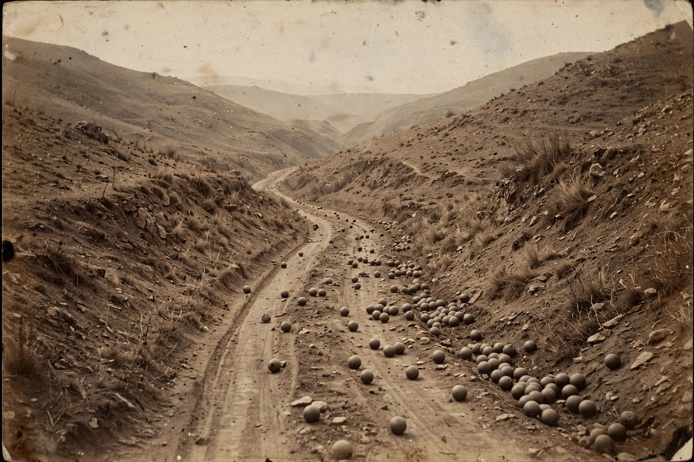

The Crimean War (October 1853 – February 1856) was fought between the Russian Empire and an alliance of the Ottoman Empire, the United Kingdom, France and (from 1855) Piedmont-Sardinia. Arising from disputes over the rights of Christian minorities in the Holy Land and Russia's ambitions at Ottoman expense, it was fought mainly on the Crimean Peninsula, where the allies besieged the Russian naval base of Sevastopol for eleven months. The war became notorious for military and medical mismanagement — and famous for Florence Nightingale's nursing reforms and for the Charge of the Light Brigade.
| Crimean War | |
|---|---|
| Date | October 1853 – February 1856 |
| Location | Crimea, Black Sea, Balkans, Caucasus, Baltic |
| Result | Allied victory; Treaty of Paris (1856) neutralises the Black Sea |
| Belligerents | Ottoman Empire, UK, France, Sardinia v. Russian Empire |
| Casualties | Several hundred thousand dead, the great majority from disease (estimates vary widely) |
France pressed Catholic claims to guardianship of the Holy Places in Palestine; Russia countered as protector of Orthodox Christians throughout the Ottoman Empire and demanded recognition of that role. When the Sultan refused, Russian troops occupied the Danubian principalities (1853) and destroyed an Ottoman fleet at Sinope. Britain and France, fearing Russian expansion toward the Mediterranean, declared war in March 1854.
The allies landed in Crimea in September 1854 and won the battles of the Alma, Balaclava (the scene of the Light Brigade's charge, 25 October 1854) and Inkerman, then settled into a long siege of Sevastopol through a terrible winter in which disease killed far more men than combat. Newspaper reporting — notably by W. H. Russell of The Times — shocked the British public and helped bring down the Aberdeen government. Nightingale's work at the Barrack Hospital at Scutari, and Mary Seacole's nearer the front, transformed military nursing; the statistician's polar-area diagrams made the case for sanitary reform. Sevastopol fell in September 1855 after the French stormed the Malakoff; peace followed at Paris in March 1856.

[ IMAGE: Roger Fenton's 1855 photograph "The Valley of the Shadow of Death" — a road strewn with cannonballs in a barren ravine. ]Fenton's photograph, among the first famous war photographsThe war exposed the decay of the Ottoman Empire — the "sick man of Europe" — and the backwardness of Russia, prompting Alexander II's Great Reforms, including the emancipation of the serfs in 1861. It was among the first wars documented by photography and telegraph, and its lessons in logistics, medicine and publicity anticipated modern war.
Russian Empire · Ottoman Empire · Victorian era · Napoleonic Wars
Categories: Crimean War · Wars involving Russia · 1850s conflicts